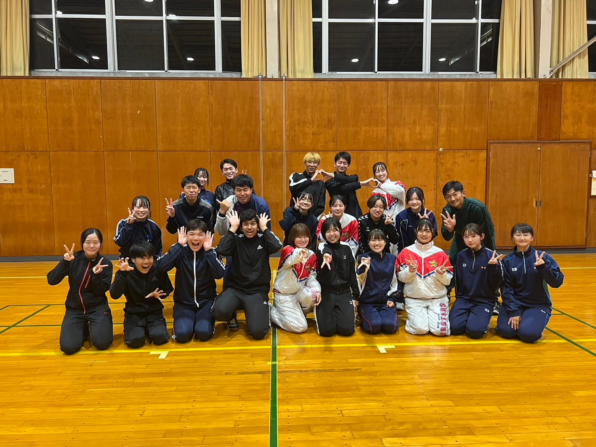

【団長】茂永健吾
大阪府立岸和田高等学校
人文学部法律経済学科
【主務】岩﨑友紀
愛知県立刈谷北高等学校
人文学部文化学科
【副団長】大竹凜空
愛知県立刈谷北高等学校
工学部総合工学科機械工学コース
【副務】石川奈生
愛知県私立清林館高等学校
教育学部学校教育教員養成課程数学教育コース中等教育選修
【副務】西村昌悠
静岡県私立浜松日体高等学校
工学部総合工学科機械工学コース
【副務】竹内渚
三重県立伊勢高等学校
教育学部学校教育教員養成課程美術教育コース初等教育選修
【会計責任者兼新人監督】扇正樹
石川県立金沢二水高等学校
生物資源学部海洋生物資源学科
【編集責任者】山中俊明
大阪府私立帝塚山学院泉ヶ丘高等学校
生物資源学部海洋生物資源学科
【広報責任者兼新人監督】川原優香
三重県立松阪高等学校
生物資源学部生物圏生命化学科
【渉内】水野心暖
大阪府立三国丘高等学校
生物資源学部共生環境学科
【リーダー長】川邊颯
三重県私立鈴鹿高等学校
工学部総合工学科応用化学コース
【ブラスバンド部長】伊藤萌果
静岡県立浜松北高等学校
生物資源学部資源循環学科
【チアリーダー部長】杉本綾音
福井県立藤島高等学校
人文学部法律経済学科
【トレーニングチーフ】片石夏菜子
奈良県立高田高等学校
教育学部学校教育教員養成課程国語教育コース初等教育選修
上に戻る
準幹部

＜リーダー部＞
桂大貴(工・応用化学)/玉田陽平(工・電気電子)
平松那菜(人・文化)/山村優人(工・機械工学)
＜ブラスバンド部＞
稲垣颯太(生・共生環境)/大森悠生(工・応用化学)/古屋琢人(工・電気電子)
水野颯士(生・共生環境)/山路柊羽(生・生物圏生命科学)/岡田美紀(人・法律経済)/河西木乃葉(人・文化)
藤井理彩子(工・建築)/水澤日女香(人・文化)/保村実里(人・文化)
＜チアリーダー部＞
岩松里奈(工・建築)/魚谷実咲(教・音楽)
古賀陽花(工・建築)/土本陽菜(人・文化)/山田小道(工・建築)
二年生

＜リーダー部＞
小笠原照弥(工・総合工)/東出壽一朗(教・英教)/武藤光(生・農林)
＜ブラスバンド部＞
阿加井 淳大(工・電気電子)/糸見 晃来(医・医)/奥平 禎大(工・電気電子)
木下 心晴(人・法律経済)/黒川 美桜(人・文化)/榊原 大生(工・電気電子)
坂本 十桜子(人・文化)/髙橋 陽菜詩(人・法律経済)/張 悠然(生・海洋生物資源)
鶴間 仁那(人・文化)/ハシミ ワイズ(工・情報工)/原 有桜(生・生命科学)
古田 奏帆(人・文化)/三谷 和暖(人・法律経済)森 舞衣弥(生・生命科学)
山田 莉央(人・文化)
＜チアリーダー部＞
安達智実(教・数教)/大橋礼奈(生・生命科学)
西村 汐織(生・農林)/森 いずみ(教・家教)
上に戻る